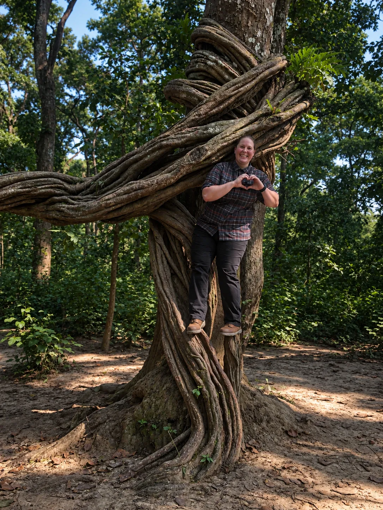

Hi, I’m Ashley

Lewis & Clark Graduate School of Education & Counseling
Marriage and Family Therapist Associate
Supervisor: Justin Rock, LMFT, LPC
My foundation as a therapist started on a basketball court…
As a collegiate athlete, I was always drawn to pushing my own limits. I translated the commitment, endurance, grit, and team cohesion of my student-athlete years and applied them directly to the next chapters of my life. My professional career began in public service, serving as a medic in the military and working as a firefighter/paramedic with over a decade of experience. While my resume has a few plot twists, every transition prepared me to sit across from my clients today and help them navigate their own unexpected turns. Drawing from this non-traditional background provides me with a unique lens for understanding organizational systems and human relationships. The families, teams, workplaces, and cultures that surround us shape who we are, just as we actively shape them.
I have a fierce belief that healing and change are possible. I listen closely for the unspoken language of where your system is feeling stuck, carrying weight, or protecting you from pain. Together, we will make room for whatever shows up, no emotion or experience is too heavy for us to hold.
Therapy with me is active and direct. Growth is messy and repetitive, but it should always have a direction.
I view myself as a guide, with you always in control of your destination. While I will challenge you, it is always grounded in deep support. I know what it’s like to get so lost in the grind, forgetting who you are and the strength you hold. If you recognize that constant pull to keep pushing through, you are not alone.
Let’s navigate the next chapter together.
Meet Lupa
Lupa is my “co-therapist,” a Pembroke Welsh Corgi who may occasionally make an appearance on screen to lend an ear, or two! During sessions, you’ll usually find her resting on the floor or curled up on her blanket nearby.
Outside the office, Lupa rarely misses an opportunity to cast her vote in favor of an outdoor adventure. She brings playfulness and humor to even the simplest moments. In the mornings, she hides under the blankets and waits to be found. She also likes to “hide” in the grass, despite usually being very obvious. I play along of course because, well, it’s super cute! Lupa wholeheartedly embraces both playful antics and the art of relaxing. A helpful reminder that life needs room for both.

Many of us spend time developing the mind.Rarely do we spend time developing the heart.

There is little value in accelerating toward something you aren’t aiming at. I work with you to slow down, get curious, clarify the aim, and engage in a different way. While we are conditioned to train our minds for performance, we rarely learn how to train our hearts for presence.
The work happens both in and out of sessions. Meeting weekly is the standard rhythm, providing an anchor as you grow.
If you're looking for a place to develop the heart space that shapes your life, let's connect.
Therapeutic approaches that inform my work:
- Cognitive Behavioral Therapy (CBT)
- Solution-Focused Brief Therapy (SFBT)
- Motivational Interviewing
- Strength-Based Therapy
- Person-Centered Therapy
- Experiential Therapy
- Inner-Child Therapy
Finding the right therapist matters because therapy is personal. You deserve to feel understood, respected, and comfortable enough to be honest. That's why I offer a complimentary consultation before we begin. It gives us a chance to talk about what's bringing you in, what you're looking for, and whether I'm the right person to help. If I don't think I'm the best fit, I will be honest with you and help point you toward a resource that can support you.